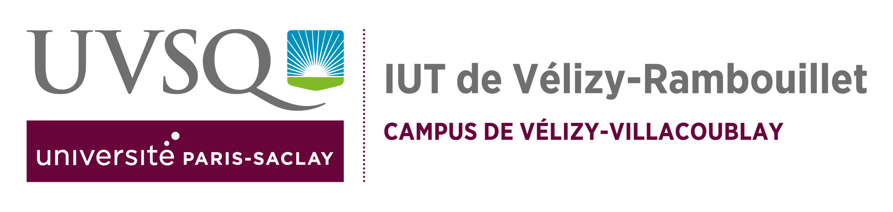
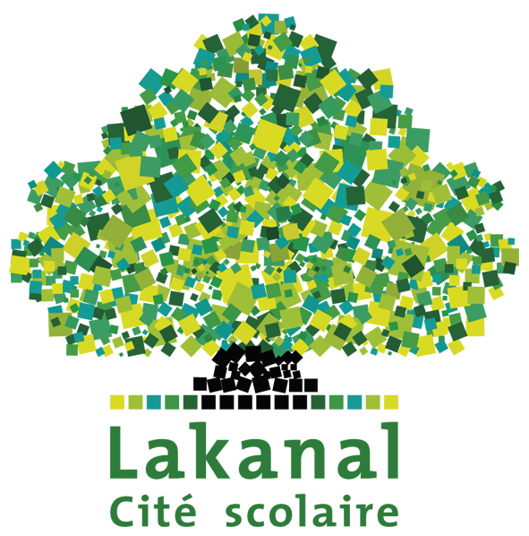
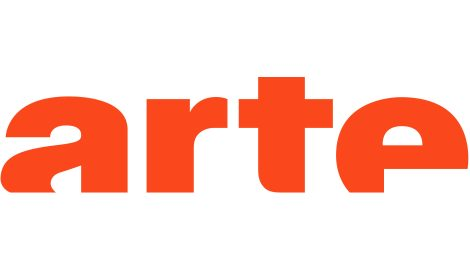

Parcours académique
-
IUT de Vélizy (78140)

BUT Informatique (2023-2026)
Étudiant de 2ᵉ année en BUT Informatique, spécialité Développement d'applications.
Réalisation de plusieurs projets pratiques en binôme ou en groupe. -
Lycée Lakanal (92330)

Baccalauréat Général, Spécialité Mathématiques et NSI
Mention assez bien.
Expériences professionnelles
-
Stage de 3ᵉ à Arte

Janvier 2020
Stage d'observation à Arte (Issy-les-Moulineaux) à travers les différents services de l'entreprise.